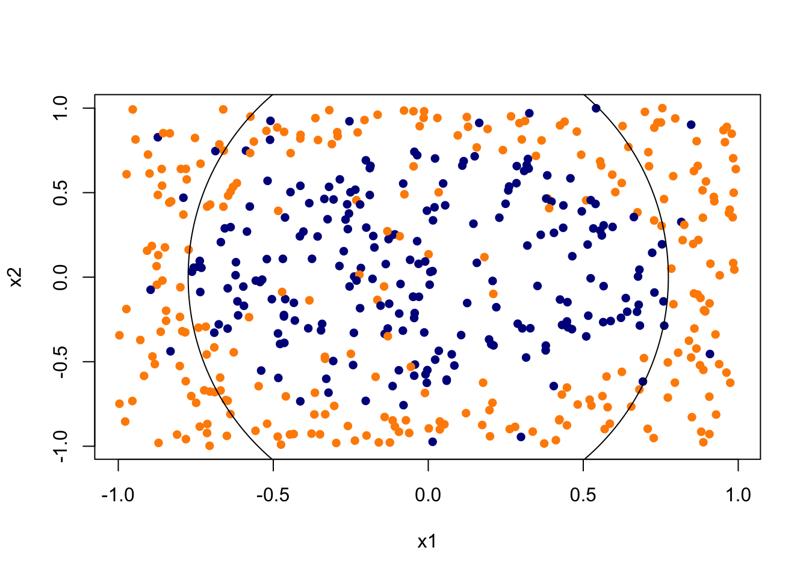
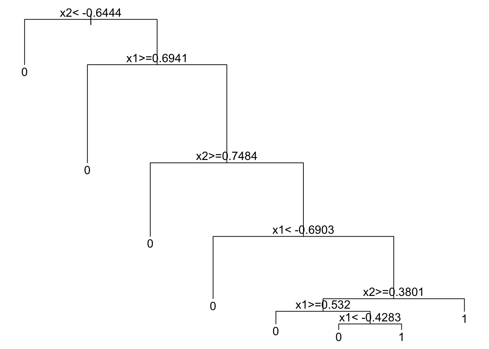
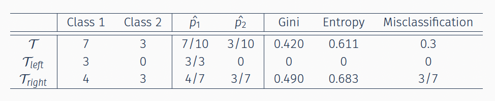

10.1 Splitting Rules in Classification Trees
To see how the splitting rule works, start with a toy example. Draw \(X_1, X_2 \sim \mathrm{Uniform}[-1,1]\). Generate the label so that about 90% of the Class 1 (blue) points fall inside the circle \(x_1^2 + x_2^2 < 0.6\), while about 90% of the Class 2 (orange) points fall outside it.
## Simulation
set.seed(1)
x1 = runif(500, -1, 1)
x2 = runif(500, -1, 1)
y = rbinom(500, size = 1, prob = ifelse(x1^2 + x2^2 < 0.6, 0.9,
0.1))
plot(x1, x2, col = ifelse(y == 1, "darkblue", "darkorange"),
pch = 16)
symbols(0, 0, circles = sqrt(0.6), add = TRUE, inches = FALSE)
A classification tree recursively splits this plane so that each resulting region is dominated by one class.
library(rpart)
rpart.fit = rpart(as.factor(y) ~ x1 + x2, data = data.frame(x1,
x2, y))
par(mar = rep(0.5, 4))
plot(rpart.fit)
text(rpart.fit)
The complexity table records the sequence of splits and the associated cost-complexity parameters:
## CP nsplit rel error xerror xstd
## 1 0.17040359 0 1.0000000 1.0000000 0.04984280
## 2 0.14798206 3 0.4843049 0.6816143 0.04612343
## 3 0.01121076 4 0.3363229 0.4125561 0.03885386
## 4 0.01000000 7 0.3004484 0.3721973 0.03730931As before, we can prune the tree and plot it with rpart.plot:
pruned.tree = prune(rpart.fit, cp = 0.041)
rpart.plot(pruned.tree, type = 2, extra = 104, fallen.leaves = TRUE)
The Bayes boundary in this example is a circle, but every split is perpendicular to a coordinate axis. The tree can only approximate that curve by a staircase of rectangles. That is approximation bias from the axis-aligned partition, not a coding failure. Bagging and random forests average many such staircases; they do not remove the axis-aligned constraint.
At a given node the algorithm compares all candidate splits on all variables. For each variable it finds the best cutoff, then it compares those best cutoffs across variables and keeps the single split that most improves the criterion. It then repeats on each child.
For a continuous predictor the split has the form \(\mathbf{1}_{\{X^{(j)} \leq c\}}\): node \(\mathcal{T}\) is partitioned into two children. We evaluate the impurity of the parent and of the two children (there are \(K\) classes) and choose the split with the largest reduction in impurity.
That raises the question: which criterion should we use to compare cutoffs? Three standard choices are:
- Gini impurity (CART)
- Shannon entropy (C4.5)
- Misclassification error
10.1.1 Impurity Measures
To choose the variable and the cutoff we quantify the gain in an impurity measure. If \(i(t)\) denotes the impurity at node \(t\), the gain of a split \((j,s)\) is \[\Phi(j,s) = i(t) - \bigl( p_L \cdot i(t_L) + p_R \cdot i(t_R) \bigr),\] where \[ i(t) = I\bigl(\hat{p}_t(1), \ldots, \hat{p}_t(K)\bigr), \] \(I(\cdot)\) is an impurity function, and \(\hat{p}_t(k)\) is the sample frequency of class \(k\) at node \(t\). We pick the split \((j,s)\) with the largest reduction in impurity.
A proposed split \(\mathbf{1}_{\{X^{(j)}\leq c\}}\) partitions the observations in the node into two disjoint children, \(\mathcal{T}_{L}\) and \(\mathcal{T}_{R}\). Writing \(N_{\mathcal{T}}\), \(N_{\mathcal{T}_L}\), and \(N_{\mathcal{T}_R}\) for the corresponding sample sizes, the same gain is \[ \Phi(j,s) = I(\mathcal{T}) - \Biggl( \underbrace{\frac{N_{\mathcal{T}_L}}{N_{\mathcal{T}}}}_{\hat{p}_L}\, I(\mathcal{T}_L) + \underbrace{\frac{N_{\mathcal{T}_R}}{N_{\mathcal{T}}}}_{\hat{p}_R}\, I(\mathcal{T}_R) \Biggr). \] The algorithm searches over variables \(j\) and cut points \(c\) and keeps the split with the best score.
We now define an impurity measure formally.
Definition: Impurity measure
An impurity measure is a function \(I(p_1, \ldots, p_K)\) defined on \(p_k \geq 0\), \(\sum_k p_k = 1\), with the following properties:
the maximum occurs at the uniform distribution \((1/K, \ldots, 1/K)\);
the minimum occurs at a vertex \(p_k = 1\) (a perfectly pure node);
\(I\) is symmetric in \((p_1, \ldots, p_K)\): permuting the class probabilities does not change \(I\).
The impurity measures used most often in classification are the following.
Gini index (CART) \[ \operatorname{Gini}(\mathcal{T}) = \sum_{k=1}^{K} \hat{p}_k (1 - \hat{p}_k) = 1 - \sum_{k=1}^{K} \hat{p}_k^2, \] where \[ \hat{p}_k = \frac{\sum_i \mathbf{1}_{\{y_i=k\}} \mathbf{1}_{\{x_i \in \mathcal{T}\}}}{\sum_i \mathbf{1}_{\{x_i \in \mathcal{T}\}}} \] is the within-node frequency of class \(k\).
Shannon entropy (ID3/C4.5) \[ \operatorname{Entropy}(\mathcal{T}) = - \sum_{k=1}^{K} \hat{p}_k \log \hat{p}_k. \]
Misclassification rate \[ \operatorname{Error}(\mathcal{T}) = 1 - \max_{k=1,\ldots,K} \hat{p}_k. \]
When there are only two classes (\(K=2\)) and \(p\) denotes the frequency of class 1, these reduce to
- Gini index: \(2p(1-p)\)
- Shannon entropy: \(p\log(1/p) + (1-p)\log\bigl(1/(1-p)\bigr)\)
- misclassification error: \(\min(p, 1-p)\)
Plotting the three binary impurity curves:

A smaller value of the impurity measure means that the node is more “pure,” so there is less uncertainty about the class prediction. The point of a split is to produce two children that contain less variation—that is, children that are as pure as possible. We therefore compute the criterion before and after each candidate split and keep the cutoff with the largest reduction.
Take the Gini index as an example. For an internal node \(\mathcal{T}\), \[ \Phi_{\operatorname{Gini}}(j,c) = \operatorname{Gini}(\mathcal{T}) - \Biggl( \frac{N_{\mathcal{T}_L}}{N_{\mathcal{T}}}\, \operatorname{Gini}(\mathcal{T}_L) + \frac{N_{\mathcal{T}_R}}{N_{\mathcal{T}}}\, \operatorname{Gini}(\mathcal{T}_R) \Biggr). \] The two children produced by a split of variable \(j\) at cutoff \(c\) are \[\begin{align*} \mathcal{T}_{L} &= \{x: x\in \mathcal{T},\, x_j \leq c \},\\ \mathcal{T}_{R} &= \{x: x\in \mathcal{T},\, x_j > c \}. \end{align*}\] The first term is the uncertainty in the parent; the second is the size-weighted uncertainty of the two children. A larger score is a better split, and we take \[ \arg\max_{j,c} \Phi_{\operatorname{Gini}}(j,c). \]
A Binary Classification Problem: Toy Example
Consider the following split of a node of size 10:

The three impurity gains are \[\begin{align*} \Phi_{\operatorname{Gini}} &= 0.420 - \bigl(\tfrac{3}{10}\cdot 0 + \tfrac{7}{10}\cdot 0.490\bigr) = 0.077,\\[4pt] \Phi_{\operatorname{Entropy}} &= 0.611 - \bigl(\tfrac{3}{10}\cdot 0 + \tfrac{7}{10}\cdot 0.683\bigr) = 0.133,\\[4pt] \Phi_{\operatorname{Error}} &= \tfrac{3}{10} - \bigl(\tfrac{3}{10}\cdot 0 + \tfrac{7}{10}\cdot \tfrac{3}{7}\bigr) = 0. \end{align*}\]
Gini and Shannon entropy respond to changes in the node probabilities and tend to produce purer children. Misclassification error is a natural criterion for evaluating a finished tree, but it is often not sensitive enough for growing one. Entropy and Gini are strictly concave, so the split gain \(\Phi\) is nonnegative and is strictly positive unless the two children have the same class frequencies. That is one reason they are the default criteria for growing trees.
10.1.2 Splitting Rules: Categorical Predictors
If a predictor \(X^{(j)}\) is categorical and takes values in \(\{1, \ldots, M\}\), we search over a subset \(\mathcal{A} \subset \{1, \ldots, M\}\) and use the split \[ \mathbf{1}_{\{X^{(j)} \in \mathcal{A}\}}. \] There are at most \(2^{M-1}-1\) distinct partitions into two nonempty groups, so the search becomes expensive when \(M\) is large. Heuristics are then used; for example, one can try several random assignments of categories to a child.
For binary classification there is a useful shortcut (a classical CART result): order the \(M\) levels by the proportion of class 1, treat that ordered list as if it were a continuous variable, and search only the \(M-1\) adjacent cuts. That reduces the problem from exponential in \(M\) to linear in \(M\).